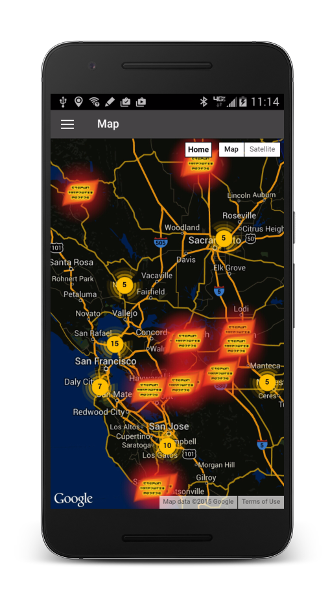
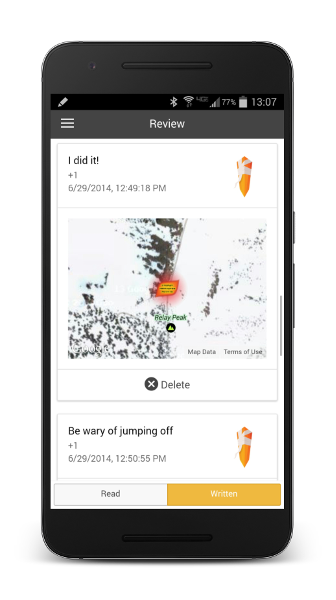

App Highlight
Work from outside work. Because couch code is the best kind of code.
Soapstone
Born out of a love for Fromsoft’s Dark Souls game series, Soapstone is a mobile app that allows fans of the game to replicate one of the game’s most famous and unique features in the real world. This project was featured on Kotaku, PC Gamer, and a handful of other gaming news sites.
- Ionic Framework
- Custom Cordova plugin for background geolocation
- MEAN backend
- RESTful API for app queries
- Over 100k users

